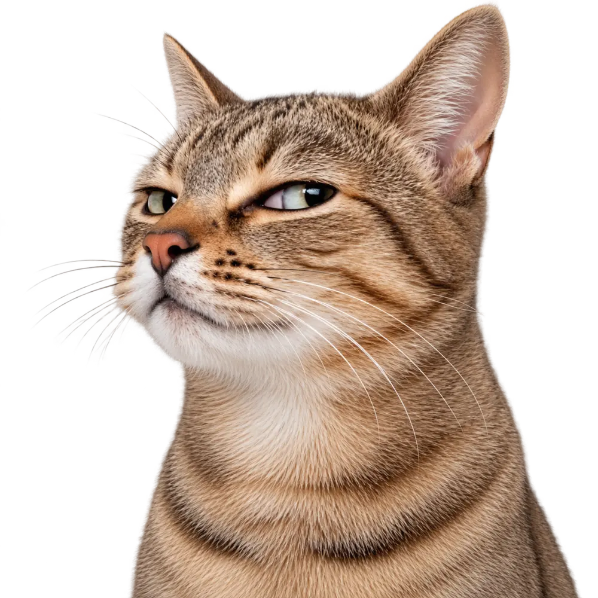

Skip to content
units
learning
cinekind
help
store
get involved
members
⌕
Donate
Close
Units
Learning
CineKind
Help & report
Store
Become a Patron
Get Involved
Members
The Circle
Donate
Close
The PFA Store
Buy what you already need.
Good happens automatically.
Shop everything
The Pharmacy
Things that fund care
2 clicks from seen to bought
Free shipping over ₹999

People for Animals
THE PFA
STORE.
Everything
↗
The Pharmacy
↗
Your orders
↗
Shop
Things that fund care
One page. Two clicks. Done.
Search
Category
Everything
For your animal
Toys
Everyday
The Pharmacy
Nutraceuticals
Grooming
For
All animals
Dog
Cat
Bag ·
0
Updated